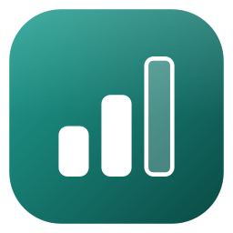

Quiet Ledger
Le tue spese personali, cifrate e sul tuo dispositivo.
Cos'è
Quiet Ledger è un'app personale per tenere traccia delle spese: importa lo storico da Excel, divide le spese per categoria, trova gli abbonamenti, prevede le spese del mese successivo e segue gli obiettivi di risparmio. Funziona su PC Windows e, come web app, su iPhone.
Privacy prima di tutto
- I dati restano sul tuo dispositivo, in un archivio cifrato con AES-256 e protetto da PIN.
- Nessun server dell'app, nessun account, nessuna pubblicità, nessun tracciamento.
- La sincronizzazione tra PC e telefono, se la attivi, usa una cartella nascosta del tuo Google Drive e vi scrive solo file già cifrati, che Google non può leggere.